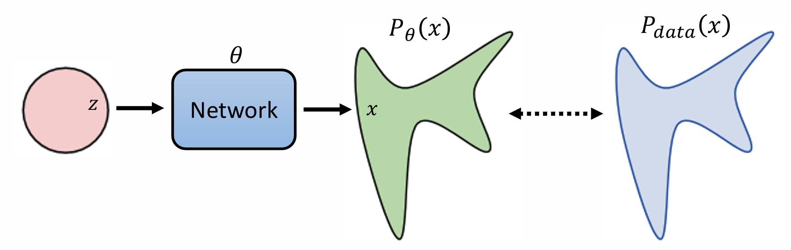
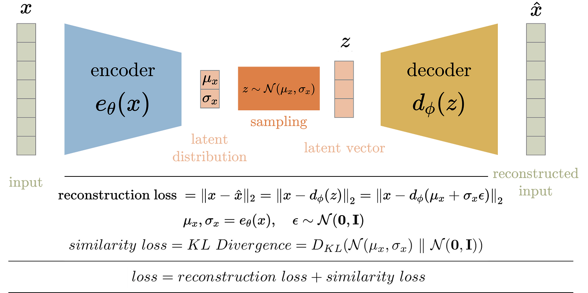
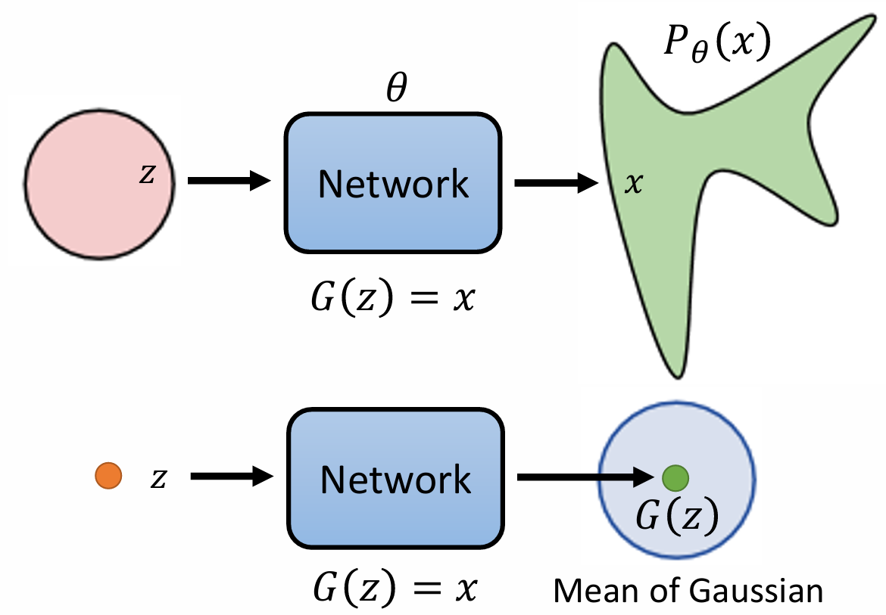
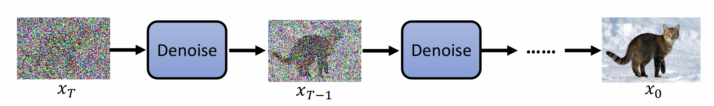
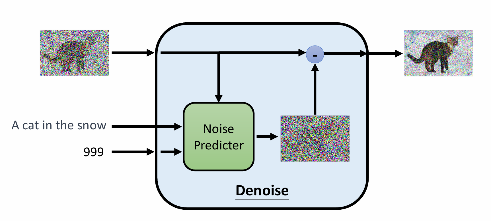
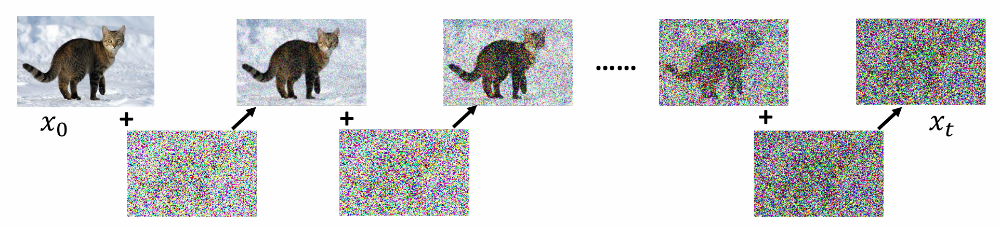
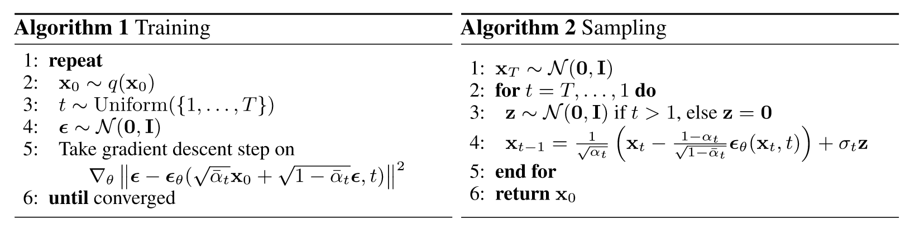

该笔记的主要内容参考李宏毅老师的机器学习课程 Machine_Learning: 李宏毅2021/2022/2023春季机器学习课程课件及作业以及 Lil 的博客 What are Diffusion Models? ，主要关注其中涉及的公式推导。
目标
在没有输入条件的情况下，生成式模型的目标是从通过一个网络，将一个随机分布变换为另一个分布，并使得该分布与特定的数据分布（图像，点云）尽可能得相近。

设数据分布为 $p_{\text{data}}(x)$ ，神经网络学习到的分布为 $p_{\theta}(x)$ ，神经网络中的可学习参数为 $\theta$ ，我们需要衡量两个分布的相似性。根据最大似然，我们从 $p_{\text{data}}(x)$ 中采样一系列数据
则目标为最大化 $p_{\theta}(x^i)$ ，即
改写为对数似然
根据大数定律，我们可以将上式进一步表达为期望的形式
我们将其减去一个 $\theta$ 无关的量，则其等价于最小化两个分布的 KL 散度。
VAE
AE 的思想是：通过一个 Encoder 将原始数据编码，然后用一个 Decoder 将其解码。而 VAE 进一步要求中间的潜在变量服从简单的高斯分布。VAE 的两端是同一个数据，也即所谓“自编码”。其工作流程大概是：通过一个 Encoder 将原始数据送到一个高斯分布，并要求该高斯分布与标准正态分布接近。然后从该分布中随机采样，输入到 Decoder 中，恢复出原始数据。通过适当的训练，编码器能够将原始数据映射到服从标准高斯分布的潜在空间，而解码器能够从中预测合适的数据分布。

VAE 的假设就是 code 服从标准高斯分布，因此包含两个损失：一个是解码后的重建损失，度量解码结果和原始结果的相似性；另一个是编码分布和标准高斯分布的相似性，即 KL 散度。下面将更具体地推导为什么这两个损失能够实现生成式模型的目标。
通过一个 Decoder $D$ 学习数据分布，其输入为服从简单先验分布的随机变量 $z$ ，输出为接近数据分布的 $x$ 。为了定义损失函数，我们需要计算 $p_{\theta}(x)$ ，可以表示为
其中 $p(z)$ 已知，而 $p_{\theta}(x|z)$ 是较难计算的，且对参数 $\theta$ 不可导。为了计算便利，我们假设预测值实际上是高斯分布的均值，则 $p_\theta(x|z)$ 可以近似表示为以 $G(z)$ 为均值的高斯分布上的概率。 即
这种技巧也叫重参数化（或随机反向传播），保证了梯度的传播。

然而在实际计算时，我们没有办法直接最大化 $p_{\theta}(x)$ ，因为积分操作是难以实现的。取而代之的是最大化它的证据下界（Evidence lower bound，ELBO）。具体来说，我们可以定义任意一个分布 $q(\cdot|x)$ ，它都会满足
从而引出下面的等式
根据贝叶斯定理，$p_{\theta}(z, x) =p_{\theta}(z|x)\cdot p_\theta(x)$ ，因此
我们对原式进行放缩得到
KL 散度是恒大于等于零的，可以由 $\log$ 函数放缩来证明：设有两个概率分布 $f(x),g(x)$ ，则
因此 $\text{KL}(q(z|x)|p_{\theta}(z|x)) \ge 0$ ，则
因为 $\log p_\theta(x)$ 实际上只与 $p_\theta(x|z)$ 有关，即只与解码器有关，而与编码器无关。因此我们可以通过调整 $q(z|x)$ ，使其与后验分布 $p_\theta(z|x)$ 相同，此时 $\log p_\theta(x)=L_b$ 。因此当解码器不变时，最大化 $L_b$ 也就是等价于最小化 $\text{KL}(q(z|x)|p_{\theta}(z|x))$ 。即最大化 $L_b$ 。而 $q(z|x)$ 实际上就是 VAE 的 Encoder。
下面求解 $L_b$ 的最大化。我们将其拆成两部分：
最大化 $L_b$ 首先要最小化第一项，也就是要求 $q(z|x)$ 接近于先验分布 $p_{\theta}(z)$ （实际上，这里 $p_\theta(z)=p(z)$ ，因为 $z$ 的选取与 $\theta$ 无关）。其次要最大化第二项，其本质是重建损失，即通过 VAE 后输入和输出的相似性。模型最终回归到了机器学习中常见的形式：重建损失+正则项。
DDPM
概述
去噪扩散概率模型（Denoising Diffusion Probabilistic Models，DDPM）的思想是：首先定义一个前向扩散过程，其含义是不断向原始数据 $x_0$ 添加高斯噪声，得到 $x_{0:T}$ 。然后定义一个 Denoise 模块，其作用是输入当前图像 $x_t$ 和步骤 $t$ ，输出图像中包含的噪声，并与 $x_t$ 相加得到 $x_{t-1}$ ，以此类推，就可以从噪声中恢复原始图像。

值得注意的是，在整个链条中，每个 Denoise 模块是完全一样的，这也是为什么我们需要输入额外的步骤值 $t$ 。而为了降低网络拟合的难度，Denoise 不直接产生 $x_{t-1}$ ，而是预测 $x_t$ 中包含的噪声，即 $x_{t}-x_{t-1}$ 。通过学习这样一个去噪过程，DDPM 能够从任意一个高斯噪声中恢复具有高真实度的图像。如果是为了 text to image 或其它任务，只需要在 Denoise 的输入中增加一个额外的条件输入。当然，实际上的去噪模块和下图中还有些不同，这也会得到详细说明。

假设原始数据分布为 $q(x_0)$ ，总步骤数为 $T$，添加的噪声为 $\epsilon \sim \mathcal{N}(0,\mathbf{I})$ ，下面给出 DDPM 训练和推理的步骤及原理。
前向扩散过程

首先从原始数据分布中采样一个数据 $x_0\sim q(x_0)$ ，也就是一张干净的图像。我们需要往其中不断地加入噪声。正式地，我们定义这一过程为，
其含义是根据预定义的权重 $\beta_t$ ，我们将 $\sqrt{1-\beta_t}x_{t-1}$ 作为均值，$\sqrt{\beta_t}$ 作为标准差，定义了一个新的高斯分布，也就是 $x_t$ 服从的分布。这也可以写成更直观的形式：
在原来的理解中，前向扩散需要不断地向数据中添加噪声，有些繁琐。但实际上，我们可以通过重参数来解决这一点。令 $\alpha_t=1-\beta_t$ ，则
我们将 $x_{t-1}$ 继续拆开，
根据高斯分布的再生性，我们可以合并后面两项得到
我们会发现该形式和前面保持了一致。换言之，添加两次噪声可以用添加一次噪声来表示，那么同理，添加 $T$ 次噪声也是一样的。继续迭代，得到
这也解释了为什么要用 $\sqrt{\beta_t}$ 的形式而非 $\beta_t$ ：带了根号的形式优雅地合并了所有步骤。因为 $\beta_t\in[0,1]$ ，$\overline\alpha_t$ 是递减的，所以随着 $t$ 的增大，原始数据权重越来越小，噪声权重越来越大，这实现了前向扩散的目标。
反向扩散过程
反向过程的目标是学习上述过程的逆过程 $q(x_{t-1}|x_t)$。和 VAE 一样，首先我们需要知道优化的目标。在 VAE 中，我们知道
将这里的编码器 $q(z|x)$ 替换成前向过程 $q(x_{1:T}|x_0)$ ，则有
令
经过一些推导，可以将上式分解为一系列项：
这个过程实际上就是把第 0 项、第 $T$ 项和中间项拆分开了，得到了 $L_T,L_{t-1}$ 和 $L_0$ 。而重要的是，$L_T$ 是一个常数，因为 $x_0$ 是已知图像，$x_T$ 是纯噪声。$L_0$ 同样可以视作已知项。而 $L_{t-1}$ 中的 KL 散度直接将 $p_\theta(x_{t−1}|x_t)$ 与前向过程后验 $q( x_{t-1} \vert x_t, x_0)$ 进行比较。这也和 VAE 的结果是相当类似的。
让我们进一步处理这个前向过程后验。应用贝叶斯定理，
得益于重参数化的结果， $x_t$ 可以用 $x_{t-1}$ 表示，也可以用 $x_0$ 表示，并且他们都是正态分布，可以直接得到概率密度的表达式 $\exp \left(-\frac{1}{2}\frac{(x-\mu)^2}{\sigma^2}\right)$。因此有
代入并整理同类项，得到
其中 $C(x_t,x_0)$ 是与 $x_{t-1}$ 无关的部分。由于这个分布还是高斯分布，我们可以求取它的均值和方差：
出人意料的整齐的形式，可以理解为 $x_t$ 和 $x_0$ 的某种插值。或者说，在已知 $x_0$ 的情况下，逆向过程是已知的。然后继续将 $x_0$ 写作 $x_t$ 的表达式，代入可得
我们将逆向过程解释为高斯分布，并且通过网络预测均值和方差，因此目标就是通过神经网络 $\mu_\theta$ ，使输入结果接近 $\mu_t$ 。而根据上面的推导，$\mu_t$ 中有一大部分是网络的输入 $x_t$ ，因此我们可以再次重参数化，使用一个噪声预测模块 $\epsilon_{\theta}$ 来达到这一效果。
换言之，网络在每一级都会直接预测第一次采样的噪声，只不过在前面加上了权重，使得其仍然表达的是从 $x_t$ 到 $x_{t-1}$ 的过程。
理论上我们还需要预测标准差，然后使用高斯分布的 KL 散度公式计算 $L_{t-1}$ 中的每一项。但实际上 DDPM 并没有使用神经网络去预测方差，而是假定 $p_\theta(x_{t-1}|x_t)$ 和 $q(x_{t-1}|x_0,x_t)$ 具有相同的方差，也就是上面求解的 $\sigma_t$ 。因此我们的损失函数可以写作
这里主要是消除了两个均值的公共项，留下了噪声部分。而 DDPM 也发现，忽略这个方差能够取得更好的效果，也就得到简化后的损失函数
简化之前的 $\sigma_t$ 等同于给不同样本不同的权重，简化后则忽略了它们。原论文的解释是，忽略这些权重能够让网络更专注于噪声更多的部分，也就是 $t$ 较大的部分。
算法流程
有了上述推导，我们已经可以训练一个标准的 DDPM 了。但对于生成模型，还需要有一个采样生成的过程。这里将论文中的算法贴出来。有了上面的推导，它们已经很容易被理解了。

在 Sampling 的步骤中，注意到 $x_{t-1}$ 的表达式后面还多出来一项随机项。这一项的作用就是引入随机性，因为网络只预测了均值，而非高斯分布。加入这项噪声后，相当于手动给了一个方差，可能能够增强模型的生成能力。当然，这些都只是空想，毕竟我还没有实践过。